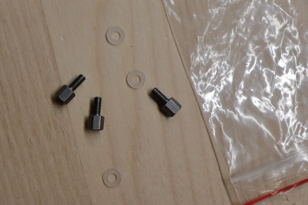
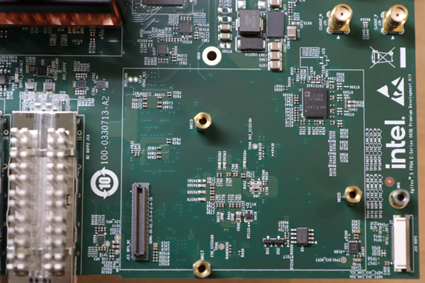
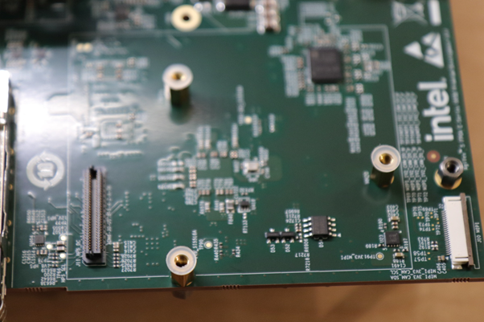
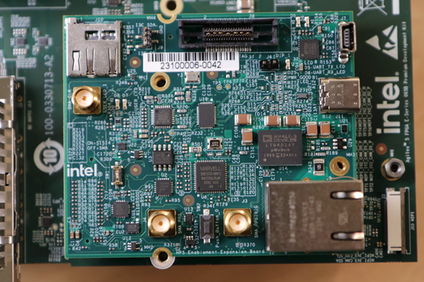
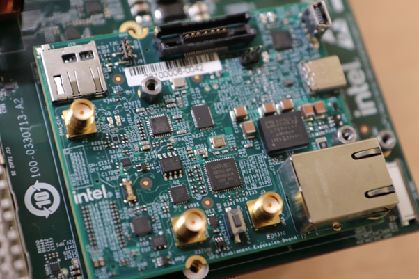

Custom IP Integration from Hardware to Software on Agilex 5 Tutorial
Introduction¶
This tutorial demonstrates how to extend the HPS Baseline System Example Design Quartus project by adding an IP core to the fabric subsystem and enabling it through the software stack. You will integrate a Lightweight UART Core to simulate a custom IP that lacks a native Linux kernel driver. Rather than developing a complex kernel-space driver from scratch, this tutorial highlights the standard hardware-to-software enablement path utilizing the generic User Space I/O (UIO) platform driver.
The hardware architecture interfaces the new UART IP with the Hard Processor System (HPS) via the Lightweight AXI Bridge. To facilitate a self-contained validation process without requiring external wiring, the design incorporates a System ID Peripheral IP—acting as a verifiable hardware fingerprint—and utilizes an internal loopback (TX to RX) within the System Verilog top-level wrapper.

Software enablement is organized into a progressive, three-tier integration and verification stack. This methodology confirms that hardware interfaces and register files are operating correctly before introducing operating system abstraction layers:
| Validation Level | Boot Environment | Verification Tool | Purpose |
|---|---|---|---|
| Level 1: Low-Level | U-Boot (Standalone) | mw.l / md.l commands |
Verify raw register address space and IP connectivity. |
| Level 2: OS-Level | Yocto Linux | devmem2 |
Confirm Device Tree mappings and base kernel accessibility. |
| Level 3: Application | Linux User Space | UIO Driver & C Application | Handle interrupts (IRQ) and mapped memory in a custom user-space app. |
The following figure shows the Yocto Project structure from the HPS Baseline System Example Design, highlighting the hooks and layers where custom recipes and kernel configuration fragments (such as .scc configuration files) are applied to bind the new hardware to the UIO driver:

This tutorial utilizes the HPS Expansion Board (HPS-EB) mounted on an Agilex™ 5 FPGA E-Series 065B Premium Development Kit. It employs an HPS-First, split-boot topology. In this configuration, the HPS configures the FPGA fabric logic. The First Stage Bootloader (FSBL) executes directly from onboard QSPI memory to initialize the system, while the Second Stage Bootloader (SSBL), Linux kernel, device tree, and root filesystem are subsequently loaded from a MicroSD card.
Tutorial Organization¶
The tutorial follows a progressive building-block approach, where each section validates a deeper layer of the system:
Level 1: Hardware Integration and Low-Level Validation¶
- Baseline System Configuration: Build the initial HPS Baseline System Example Design to validate the toolchain and establish a software baseline.
- Hardware IP Integration: Add the Lightweight UART IP in Platform Designer, map its memory space, and route its signals through the SystemVerilog top-level wrapper.
- U-Boot Enablement: Use the "Roll Your Own" (RYO) flow to build a standalone bootloader and verify hardware connectivity before loading an OS.
Level 2: Linux Integration and Driver Binding¶
- Linux IP Integration and Testing: Update the Yocto device tree, kernel UIO modules, and kernel boot arguments to bind the custom hardware to the
uio_pdrv_genirqdriver. - Hardware Verification: Use the updated Linux image to confirm that the HPS can access the FPGA fabric registers with
devmem2.
Level 3: Application Development and Deployment¶
- Application Development: Configure the Arm GNU Toolchain and develop a C application to perform an integration test on the new hardware module.
- Deployment and Debugging: Integrate the application into the Yocto project as a recipe and use the Ashling* RiscFree* IDE for remote hardware debugging.
Prerequisites¶
Before assembling hardware or compiling software, verify that your host development workstation satisfies all required toolchain versions, operating system dependencies, and storage capacity baselines. The build pipeline combines high-level Yocto cross-compilation with FPGA fabric synthesis, requiring substantial CPU and memory resources. Ensuring your workstation meets these prerequisites avoids compilation bottlenecks and communication errors during target bring-up.
Hardware Requirements¶
- Agilex® 5 FPGA E-Series 065B Premium Development Kit (Ordering Code:
DK-A5E065BB32AEA):- HPS Enablement Expansion Board (HPS-EB daughtercard)
- Mini-USB cable (for HPS UART serial terminal)
- Micro-USB cable (for Intel FPGA Download Cable II / JTAG)
- MicroSD card and USB card reader
- Power supply and regional AC cord
Host PC Requirements¶
- Operating System: Ubuntu 22.04 LTS (x86_64)
- Hardware Resources:
- Minimum 64 GB RAM (essential for Quartus synthesis and parallel BitBake tasks)
- Minimum 200 GB available disk space (SSD recommended)
- Software Tools:
- Altera® Quartus® Prime Pro Edition Version 26.3
- Ashling* RiscFree* IDE for Altera Version 26.3
- Serial terminal emulator (e.g., Minicom, GtkTerm, PuTTY)
- High-speed Internet access for downloading Yocto layers and dependencies
Board Setup¶
Warning
The Agilex 5 FPGA development kit contains static-sensitive digital components and precision power regulation circuitry. Review the handling and power-up instructions in the Getting Started guide before applying power to avoid hardware damage.

Installing the HPS Enablement Expansion Board
The Hard Processor System (HPS) Enablement Expansion Board bridges the Agilex 5 SoC processing subsystem to essential off-board interfaces, including the dedicated UART console and Ethernet PHY. Proper physical mounting prevents intermittent pin contact on high-density headers and prevents mechanical strain on the board assembly. Ensure the main development kit is unpowered and placed on an ESD-safe mat before proceeding with mechanical installation.
-
Retrieve Mounting Hardware:
Locate the plastic accessory bag containing the knurled thumb screws and non-conductive plastic washers.

-
Locate Expansion Headers:
Identify the HPS daughtercard footprint and expansion connectors on the primary development board.

-
Position Washers:
Place one plastic washer onto each of the three threaded hex standoffs.

-
Align and Seat the Daughtercard:
Carefully align the daughtercard mating connectors with the primary board headers and press down evenly until fully seated on the standoffs.

-
Fasten the Board:
Install and hand-tighten the thumb screws on the two upper standoffs shown below. Leave the bottom standoff unfastened, as tightening this position can introduce board flex and twist the mating connector. Secure the thumb screw adjacent to the Ethernet receptacle carefully using small pliers if finger clearance is limited. Ensure the daughtercard sits flat and does not shift.



Configuring the MSEL Boot Mode Switches
The Mode Select (MSEL) pins configure the FPGA configuration controller for specific boot sources, clocking topologies, and bus widths. This design relies on two modes: JTAG mode to write the Flash Loader and secondary bootloader to non-volatile QSPI flash, and Active Serial (ASx4) mode to read the bitstream autonomously upon system reset. Set the 4-position DIP switch SW27 strictly while the board is powered down to prevent indeterminate configuration latching.
Warning
Always power off the board before changing SW27 DIP switch settings. Adjusting MSEL switches while power rails are energized can corrupt active flash transactions or lead to configuration sequencing errors.
JTAG Configuration Mode (SW27: OFF / OFF / OFF / OFF)
Set all four switch actuators on SW27 to the OFF position to route the configuration state machine directly to the JTAG scan chain. Use this configuration when programming non-volatile bitstreams (.jic) to QSPI flash using quartus_pgm.

Active Serial x4 (QSPI) Mode (SW27: OFF / ON / ON / OFF)
Set switch actuators 1 and 4 to OFF, and actuators 2 and 3 to ON. Use this configuration for normal standalone boot, allowing the Agilex 5 Secure Device Manager (SDM) to load the initial bootloader and configuration bitstream directly from onboard QSPI memory via Active Serial x4.

Host Software and Dependency Configuration¶
Set up your Ubuntu 22.04 LTS host with 32-bit runtime libraries, build automation packages, and core Yocto dependencies.
# Enable 32-bit architecture for Quartus utility dependencies
sudo dpkg --add-architecture i386
sudo apt-get update
sudo apt-get upgrade -y
# Install build dependencies
sudo apt-get install -y \
build-essential gcc bc bison flex diffstat gawk texinfo chrpath socat \
cpio file fakeroot swig device-tree-compiler u-boot-tools mtd-utils \
git wget curl unzip xz-utils zstd liblz4-tool mtools p7zip-full \
python3 python3-pip python3-pexpect python3-git python3-jinja2 \
python3-subunit python3-newt python3.10-venv pylint \
libgmp3-dev libmpc-dev libssl-dev libelf-dev libacl1 ncurses-dev \
mesa-common-dev libegl1-mesa libsdl1.2-dev xterm \
openssh-server mc net-tools iputils-ping debianutils \
tftp tftpd nfs-kernel-server xinetd \
libc6:i386 libstdc++6:i386 libgcc-s1:i386 lib32z1 libncurses5
# Configure required locale
sudo locale-gen en_US.UTF-8
# Configure bash as default system shell
sudo ln -sf /bin/bash /bin/sh
Add Quartus® Prime Pro Edition binaries to your system environment variables. Update the paths if your Quartus installation resides outside $HOME/intelFPGA_pro:
Level 1: Baseline System Configuration¶
Establish a verified hardware and software baseline using the default HPS Baseline System Example Design prior to integrating custom fabric IP. Compiling the unmodified reference design in Quartus Prime and assembling the Linux image in Yocto confirms that board switch configurations, host toolchains, and serial communication paths are fully operatiosnal before entering custom logic debug.
Hardware Design Checkout and Build¶
Source Code Initialization and Environment Setup¶
Clone the reference hardware project from the repository and check out the design configured for Linux execution on Core 0 (Arm Cortex-A55) within the HPS:
# Clone repository with sparse checkout targeting baseline A55
mkdir agilex5_soc_devkit_ghrd && cd agilex5_soc_devkit_ghrd
wget https://github.com/altera-fpga/agilex5e-ed-gsrd/releases/download/QPDS26.3_REL_BASELINE_PR/dk-a5e065ab32aea-enablement-baseline-a55.zip
unzip dk-a5e065ab32aea-enablement-baseline-a55.zip
rm -f dk-a5e065ab32aea-enablement-baseline-a55.zip
CWD=$(pwd)
FPGA Project Compilation¶
Compile the Quartus project to generate the initial FPGA configuration bitstream:
This compilation generates $CWD/output_files/baseline_a55.sof.
First Stage Bootloader (FSBL) Generation¶
Agilex 5 configuration bitstreams require a First Stage Bootloader (FSBL) payload embedded directly into the peripheral configuration sector. To break the circular dependency between hardware design compilation and Yocto bootloader generation, compile an intermediate placeholder ("wipe") FSBL:
This outputs $CWD/software/hps_debug/hps_wipe.ihex, which is used by Quartus Programming File Generator (quartus_pfg) to configure the HPS peripheral partition.
FPGA Programming File Integration¶
Merge the placeholder FSBL into the SOF and convert the output into a Raw Binary File (.rbf) containing fabric logic configuration data:
# Merge placeholder FSBL into SOF
quartus_pfg -c output_files/baseline_a55.sof output_files/baseline_a55_hps_debug.sof \
-o hps_path=software/hps_debug/hps_wipe.ihex
# Generate raw binary bitstream for the HPS bootloader
quartus_pfg -c output_files/baseline_a55_hps_debug.sof output_files/baseline_a55_hps_debug.rbf \
-o hps=1
This step generates $CWD/output_files/baseline_a55_hps_debug.core.rbf. This fabric configuration binary must be passed to the Yocto build system to ensure the kernel FIT image bundles the correct hardware bitstream.
Yocto Project Build¶
Build a baseline Linux image matching the compiled Quartus project. The build uses default Yocto settings, customized to bundle the compiled fabric bitstream and append a unique kernel version suffix.
Linux Kernel Identification and Modification¶
Stage the generated core RBF inside the bitstream recipe directory:
cd $CWD
cp output_files/baseline_a55_hps_debug.core.rbf \
software/yocto_linux/meta-custom/recipes-fpga/fpga-bitstream/files/baseline_a55.core.rbf
Warning
The default recipe expects the filename baseline_a55.core.rbf. To use an alternate naming convention, update the KAS configuration as detailed in software/yocto_linux/README.md.
Append a custom identifier string to the Linux kernel version. Modify the kernel recipe append file (linux-socfpga-lts_%.bbappend) using the forcevariable override to set LINUX_VERSION_EXTENSION to -altera-f06d06:
cat << 'EOF' >> software/yocto_linux/meta-custom/recipes-kernel/linux/linux-socfpga-lts_%.bbappend
# Use the forcevariable override to ensure this value sticks
LINUX_VERSION_EXTENSION:forcevariable = "-altera-f06d06"
EOF
Build Environment Setup and KAS Tooling¶
Isolate build dependencies inside a dedicated Python virtual environment:
cd $CWD/software/yocto_linux
python3 -m venv venv --system-site-packages
source venv/bin/activate
pip install --upgrade pip
pip install kas kconfiglib
Tip
To re-enter the build environment in future terminal sessions, run source $CWD/software/yocto_linux/venv/bin/activate.
Image Assembly and Artifact Deployment¶
Compile the baseline system console image using the KAS configuration manifest:
Upon completion, BitBake places deployment deliverables into $CWD/software/yocto_linux/build/tmp/deploy/images/agilex5e/:
gsrd-console-image-agilex5e.rootfs.wic(Full multi-partition MicroSD card disk image)u-boot-spl-dtb.hex(Production First Stage Bootloader)
Exit the Python virtual environment:
Update the HPS bitstream by replacing the placeholder FSBL with the production bootloader (u-boot-spl-dtb.hex) generated by the Yocto build, creating a JTAG Indirect Configuration (.jic) file:
cd $CWD
quartus_pfg -c output_files/baseline_a55.sof output_files/baseline_a55.jic \
-o device=MT25QU128 \
-o flash_loader=A5ED065BB32AE4S \
-o hps_path=software/yocto_linux/build/tmp/deploy/images/agilex5e/u-boot-spl-dtb.hex \
-o mode=ASX4 \
-o hps=1
This step generates $CWD/output_files/baseline_a55.hps.jic.
Base Linux Boot¶
SD Card Image Deployment¶
Insert the MicroSD card into your host card reader. Identify the assigned block device node using kernel diagnostics:
Warning
Double-check the target block device node (e.g., /dev/sdX). Writing raw image blocks to an incorrect drive identifier can permanently destroy host filesystem partitions.
Write the WIC image directly to the raw block device using dd:
sudo dd if=$CWD/software/yocto_linux/build/tmp/deploy/images/agilex5e/gsrd-console-image-agilex5e.rootfs.wic of=/dev/sdX bs=1M status=progress
sync
Eject the MicroSD card from your workstation and insert it into the MicroSD card slot on the development board.
Serial Console and Hardware Connectivity¶
Connect the Mini-USB cable between the vertical connector on the HPS Enablement Expansion Board and your host PC. Launch your serial terminal emulator configured with the following communication parameters:
- Baud Rate: 115,200
- Data Bits: 8
- Stop Bits: 1
- Parity: None
- Flow Control: None
QSPI Programming¶
Flash the production .jic bitstream into the onboard QSPI flash memory:
- Power off the development board.
- Set the MSEL DIP switch (
SW27) to JTAG Mode:OFF / OFF / OFF / OFF. - Power on the development board.
- Program the QSPI flash memory:
jtagconfig --setparam 1 JtagClock 16M
quartus_pgm -c 1 -m jtag -o "pvi;$CWD/output_files/baseline_a55.hps.jic"
System Power-Up and Software Validation¶
Complete the boot sequence:
- Power off the development board.
- Set the MSEL DIP switch (
SW27) to Active Serial x4 (ASx4) Mode:OFF / ON / ON / OFF. - Power on the development board.
- When the Linux console prompt appears, log in using username
root(no password is required).
Confirm the running kernel version matches your build configuration:
The output string should include -altera-f06d06, verifying that the board is executing the custom kernel image assembled by your Yocto build.
Hardware IP Integration¶
Instantiate the Lightweight UART Core inside the FPGA fabric and interface it with the Hard Processor System (HPS) across the Lightweight AXI Bridge. Using Tool Command Language (TCL) scripts in Visual Designer Studio (VDS), you will map peripheral registers, assign the core interrupt line to the HPS GIC, and close an internal TX-to-RX loopback wire in the top-level SystemVerilog wrapper before re-synthesizing for bootloader verification.
Adding the Lightweight UART Core to VDS¶
-
Add Lightweight UART IP to
fabric_subsys:
Create and executefabric_subsys-vds-edit.tcl. This script instantiates the IP, maps its Avalon-MM slave interface, connects clocks and resets, exports its external pins and interrupt line, and update theu_system_idIPidparameter:cd $CWD cat << 'EOF' > $CWD/fabric_subsys-vds-edit.tcl load_package vds project_open top -r baseline_a55 vds::open_system fabric_subsys # Add Lightweight UART IP to the system vds::create_cell -vlnv altera.com:ip:intel_lw_uart:1.0.8 u_lw_uart vds::export_interface_pins u_lw_uart|external_connection lw_uart_if vds::export_interface_pins u_lw_uart|irq lw_uart_irq # Clock and Reset connections vds::connect_net -dest u_system_clock|out_clk -src u_lw_uart|clk vds::connect_net -dest u_system_reset|out_reset -src u_lw_uart|reset # AVMM connection vds::connect_interface_net -dest u_lw_uart|s1 -src u_peripherals_mm_bridge|m0 # Set base address vds::assign_base_address -connection u_peripherals_mm_bridge.m0/u_lw_uart.s1 0x100a0 # Write 0x0A17_E12A to System ID IP ID parameter vds::set_properties {parameters:id 169337130} [vds::get_cells u_system_id] vds::validate_system vds::save_system fabric_subsys vds::close_system fabric_subsys project_close EOFRun the script in your host terminal:
Following execution, the Lightweight UART core is interfaced to the Avalon Memory-Mapped Pipeline Bridge as shown below:
-
Connect Lightweight UART IP in
baseline_top:
Create and executebaseline_top-vds-edit.tcl. This script exports the serial TX/RX interfaces to the project top-level and routes the interrupt line to HPS fabric interrupt inputf2h_irq0[2]:cat << 'EOF' > $CWD/baseline_top-vds-edit.tcl load_package vds project_open top -r baseline_a55 vds::open_system baseline_top vds::sync_system_info # Export Lightweight UART TX/RX interface to top level vds::export_interface_pins u_fabric_subsys|lw_uart_if lw_uart_if # Connect interrupt to HPS vds::connect_interface_net -dest u_shell_subsys|f2h_irq0_in -src u_fabric_subsys|lw_uart_irq vds::set_interrupt_irq -connection u_shell_subsys.f2h_irq0_in/u_fabric_subsys.lw_uart_irq 2 vds::validate_system vds::save_system baseline_top vds::close_system baseline_top project_close EOFRun the script in your host terminal:

Top-Level Wrapper Modification¶
Modify the top-level SystemVerilog wrapper (baseline_a55.sv) to connect an internal loopback wire between the TX and RX channels, allowing verification without external cabling.
-
Insert Loopback Connections and Port Mappings:
Run the following command to back upbaseline_a55.sv, declare the internal loopback signals, and wire them to thebaseline_topinstance:cd $CWD cp baseline_a55.sv baseline_a55.sv.bak awk '/^[[:space:]]*baseline_top[[:space:]]+u_baseline_top/{print " // lw_uart ip signals\n wire fpga_lw_uart_rxd;\n wire fpga_lw_uart_txd;\n\n // lightweight uart core loopback\n assign fpga_lw_uart_rxd = fpga_lw_uart_txd;\n"} /^[[:space:]]*\.niosv_pio_out_export/{sub(/\)/, "),"); print; print " //\n // Lightweight Uart\n .lw_uart_if_rxd (fpga_lw_uart_rxd),\n .lw_uart_if_txd (fpga_lw_uart_txd)"; next} {print}' baseline_a55.sv > tmp && mv tmp baseline_a55.svThis inserts the internal loopback assignment directly above the
baseline_topinstantiation:// lw_uart ip signals wire fpga_lw_uart_rxd; wire fpga_lw_uart_txd; // lightweight uart core loopback assign fpga_lw_uart_rxd = fpga_lw_uart_txd;It also maps the exported interface signals at the bottom of the
u_baseline_topport list: -
Recompile the Hardware Design:
Clear previous synthesis caches and run a full compilation to generate the updated FPGA configuration bitstream:
U-Boot Enablement¶
Validate the custom hardware design at the lowest software execution layer before loading an operating system. Using the standalone "Roll Your Own" (RYO) flow to build U-Boot and Arm Trusted Firmware, you will package a bare-metal test script to execute raw register writes and reads across the Lightweight AXI Bridge. This low-level verification isolates FPGA timing, address decoding, and loopback routing issues before bringing up Linux memory management and interrupt subsystems.
Build and Boot U-Boot¶
RYO Toolchain and Environment Setup¶
Navigate to the RYO directory and configure the Arm64 cross-compiler:
cd $CWD/software/ryo_linux
wget https://developer.arm.com/-/media/Files/downloads/gnu/14.3.rel1/binrel/\
arm-gnu-toolchain-14.3.rel1-x86_64-aarch64-none-linux-gnu.tar.xz
tar xf arm-gnu-toolchain-14.3.rel1-x86_64-aarch64-none-linux-gnu.tar.xz
rm -f arm-gnu-toolchain-14.3.rel1-x86_64-aarch64-none-linux-gnu.tar.xz
export PATH=$(pwd)/arm-gnu-toolchain-14.3.rel1-x86_64-aarch64-none-linux-gnu/bin/:$PATH
export ARCH=arm64
export CROSS_COMPILE=aarch64-none-linux-gnu-
Arm Trusted Firmware Compilation¶
Clone the Altera Arm Trusted Firmware (TF-A) repository and compile the runtime firmware (bl31.bin):
git clone -b QPDS26.3_REL_BASELINE_PR https://github.com/altera-fpga/arm-trusted-firmware arm-trusted-firmware
cd arm-trusted-firmware
make clean
make -j "$(nproc)" PLAT=agilex5 bl31
cd ..
U-Boot Configuration and Compilation¶
-
Clone the U-Boot repository and configure debug visibility:
-
Link the compiled Arm Trusted Firmware binary into the U-Boot build directory:
-
Configure the device tree to boot from SD card and disable unused NAND controllers:
-
Create a configuration fragment to define the standalone boot command and expand flash vendor support:
cat > config-fragment << 'EOF' CONFIG_BOOTFILE="Image" CONFIG_NAND_BOOT=n CONFIG_SPL_NAND_SUPPORT=n CONFIG_CMD_NAND_TRIMFFS=n CONFIG_CMD_NAND_LOCK_UNLOCK=n CONFIG_NAND_DENALI_DT=n CONFIG_SYS_NAND_U_BOOT_LOCATIONS=n CONFIG_SPL_NAND_FRAMEWORK=n CONFIG_CMD_NAND=n CONFIG_MTD_RAW_NAND=n CONFIG_CMD_UBI=n CONFIG_CMD_UBIFS=n CONFIG_MTD_UBI=n CONFIG_ENV_IS_IN_UBI=n CONFIG_UBI_SILENCE_MSG=n CONFIG_UBIFS_SILENCE_MSG=n CONFIG_DISTRO_DEFAULTS=n CONFIG_HUSH_PARSER=y CONFIG_SYS_PROMPT_HUSH_PS2="> " CONFIG_USE_BOOTCOMMAND=y CONFIG_BOOTCOMMAND="echo Agilex 5 U-Boot prompt ready" CONFIG_BOOTDELAY=1 CONFIG_CMD_FAT=y CONFIG_CMD_FS_GENERIC=y CONFIG_DOS_PARTITION=y CONFIG_SPL_DOS_PARTITION=y CONFIG_CMD_PART=y CONFIG_SPL_CRC32=y CONFIG_LZO=y CONFIG_CMD_DHCP=y CONFIG_SPI_FLASH_MACRONIX=y CONFIG_SPI_FLASH_GIGADEVICE=y CONFIG_SPI_FLASH_WINBOND=y CONFIG_SPI_FLASH_ISSI=y # Allow 'source' to run a legacy mkimage script instead of requiring a signed FIT CONFIG_BOOTSCR_FIT_SIGNATURE=n EOF -
Merge the configuration fragment and compile U-Boot:
Boot Artifact Deployment and SD Card Creation¶
Generate the configuration files for QSPI flash memory (.jic) and the FPGA fabric (.rbf):
cd $CWD
quartus_pfg -c output_files/baseline_a55.sof output_files/baseline_a55_u-boot.jic \
-o device=MT25QU128 \
-o flash_loader=A5ED065BB32AE4S \
-o hps_path=software/ryo_linux/u-boot-socfpga/spl/u-boot-spl-dtb.hex \
-o mode=ASX4 \
-o hps=1
This command generates $CWD/output_files/baseline_a55_u-boot.core.rbf and $CWD/output_files/baseline_a55_u-boot.hps.jic.
Create an SD card image containing U-Boot proper and the FPGA bitstream:
cd $CWD/software/ryo_linux
dd if=/dev/zero of=sdcard.img bs=1M count=64
mformat -i sdcard.img :: -F
mcopy -i sdcard.img ./u-boot-socfpga/u-boot.itb ::
mcopy -i sdcard.img ../../output_files/baseline_a55_u-boot.core.rbf ::
Lightweight UART IP Sanity Check¶
Automated Script Preparation¶
U-Boot Configuration and Compilation - Step 4: config-fragment
CONFIG_BOOTSCR_FIT_SIGNATURE=n turns off U-Boot's requirement to run only a signed FIT script. The Agilex 5 defconfig enables CONFIG_BOOTSCR_FIT_SIGNATURE, so a legacy mkimage -T script image is rejected with Legacy boot script rejected: signed FIT required message. With the option cleared, source accepts that legacy script again (hw_sanity_check.scr). SPL and kernel FIT signature checks stay enabled.
Unpack and compile the U-Boot verification script hw_sanity_check.scr:
base64 -d <<'EOF' | gunzip > "hw_sanity_check.scr.txt"
H4sICAgewGoAA2h3X3Nhbml0eV9jaGVjay5zY3IudHh0AMVUW2/aMBh996/4Rit1l6YKHbRTWB8Y
gzYSKlFCL2/IJF/AWm5zHEpX8d/nhJALKdrWl/nN9nc55/j4O4Krty5yBP1rfTx8hC7cGJYynSgj
47oP90NTH+mD/lSf3II1MHVjKkONhEdhjBroAROMeuwXQhp+Ct84cxYYnwINHJhiLOCub05BN2Ac
Lpgtc98OkaC9DKGlKAoYN31rCG0t6wqDMHDZIuFUsDAAed8iLhVeSB3wfRtUrQ3HL+mWOg7fwJzG
6LEAZ7TbnSXKPAzFmR1yPONzl7jRgkKWqtaSjl9c5mEsmW4ImWcsAQM695DEHmIE7Ryefjua5LhS
DXJBKko5LSJlKFmca2A9xwJ90L/DPXLmMrtgQmIUuI442EsWzZgDH9X1uaq2VbkIc4EJqfGZBy11
ffySx2xaUmRQ1yptX2L7nBKxxICAXFuE1t1gMLQsTerGEVwq2dgVCD4V9hLel/kfWgS9GCsVhqY5
MauwfRZnae/AROpoUENDXFZn/FnbusISVCQxGByVwRLtHzXCcXY547goOdMvDc5lWEE7WxfqQdrV
3iYumCQh9fWQBinrC/Ug31cTHcbFc5V3FVGDeievMg7DaE4l5Qcu6Wx/Ssq+tLjswwULFtBRHkLu
5IEW/kwwsHHr8lSrYAUr6kn75ZunNG7myfpw4j9JmQrxOtLEMnQD7V7OC7KqsskWeXrZ6sHuBdKy
ecanNGcn/e7w6xV0epCqDDwJKo174LITUj8jFbBNqMUfqonV1cB8hJE+msAYV+jBvfxATvNv8LXL
3HDmrbzSKvOmVcqwulXUzkGr1NtzpPYSHejAk3yR+JBN6kmvfY0qkoZFLvYtkub9jUOyuP0BUphE
KoW2kOgLp0g6Tm6UYsoknGMgZunTl79OLd++GDVl4FbM7HTXI3VR5oudzYx+pmYKsJEtzShlLEJH
fX2swXCHtlb2FK5D8VoFl5W2LYhWEhsGLm/2XFyIUpq4OCL7Wu72FTQNceuPe1mfIiMWUO+/DT+O
IuGBVEqE/zz/OPqUpbl/nn8Vx9qcRUI+LtpJZtBB6Eee5Lx16m99bcKMwAgAAA==
EOF
Compile the U-Boot script into a binary and copy it to the SD card filesystem:
# Wrap plain-text script in U-Boot image header
mkimage -A arm64 -O linux -T script -C none -a 0 -e 0 \
-n "Hardware Sanity Check Script" -d hw_sanity_check.scr.txt hw_sanity_check.scr
# Stage binary onto FAT partition
mcopy -i sdcard.img ./hw_sanity_check.scr ::
Tip
To view the staged files inside the disk image without mounting it, run: 7z l sdcard.img
SD Card Image Deployment and Board Programming¶
Write sdcard.img to your MicroSD card:
Program the updated U-Boot .jic bitstream to onboard QSPI flash memory:
- Power off the development board.
- Set the MSEL DIP switch (
SW27) to JTAG Mode:OFF / OFF / OFF / OFF. - Power on the development board.
- Program the flash memory:
cd $CWD
jtagconfig --setparam 1 JtagClock 16M
quartus_pgm -c 1 -m jtag -o "pvi;output_files/baseline_a55_u-boot.hps.jic"
Boot into the standalone U-Boot environment:
- Power off the board.
- Set the MSEL DIP switch (
SW27) to Active Serial x4 (ASx4) Mode:OFF / ON / ON / OFF. - Power on the board and verify that the message
Agilex 5 U-Boot prompt readyappears on the serial console.
Script Execution and IP Verification¶
Run the automated verification script from the U-Boot prompt:
# Load script from SD card into RAM at address 0x90000000
fatload mmc 0:1 0x90000000 hw_sanity_check.scr
# Execute script
source 0x90000000
The script runs the following sequence:
- Loads
baseline_a55_u-boot.core.rbfinto memory, configures the FPGA fabric, and opens the HPS-to-FPGA bridges. - Reads and confirms the System ID peripheral value matches
0x0a17e12a. - Reads the UART status register to confirm an idle state.
- Writes 4 words into the UART TX FIFO.
- Reads the RX FIFO fill level to confirm 4 words were captured across the internal loopback.
- Pops the 4 words from the RX FIFO and verifies data integrity.
Expected output:
## Executing script at 90000000
--- PHASE 1: FPGA Configuration ---
2195456 bytes read in 123 ms (17 MiB/s)
...FPGA reconfiguration OK!
INFO: FPGA and Bridges Initialized
SUCCESS: Core fabric System ID match (0x0a17312a)
SUCCESS: UART Status Register clean (0x60)
--- Starting 4-Word Write Sequence ---
Writing: 0x1
Writing: 0x2
Writing: 0x3
Writing: 0x4
SUCCESS: RX FIFO Level reached 4 words
--- Starting 4-Word Read Verification ---
PASS: Read 0x1
PASS: Read 0x2
PASS: Read 0x3
PASS: Read 0x4
SUCCESS: UART Status returned to clean (0x60)
--- Script Execution Complete ---
Level 2: Linux Integration and Testing¶
Now that hardware loopback and address decoding have been verified in U-Boot, this section integrates the peripheral into the Linux kernel environment. You will declare the hardware node in the Linux Device Tree, configure the kernel command line to bind the peripheral to the uio_pdrv_genirq driver, compile UIO support as built-in kernel modules, and rebuild the Yocto image. Once booted, you will use devmem2 to confirm that the operating system maps and addresses the custom registers correctly through kernel virtual memory.
Updating the Device Tree and Boot Arguments¶
Device Tree Fragment Modification¶
Navigate to the Yocto directory to begin software integration:
Add the device tree node for the Lightweight UART to baseline_a55.dts:
sed -i '/dipsw_pio: gpio@20010070/,/^[[:space:]]*};/ {
/^[[:space:]]*};/ a\
\n\t\t// LW UART\n\t\tlw_uart: lw_uart@200100a0 {\n\t\t\tcompatible = "generic-uio";\n\t\t\treg = <0x200100a0 0x20>;\n\t\t\treg-names = "lw_uart_csr";\n\t\t\tinterrupt-parent = <&intc>;\n\t\t\tinterrupts = <0 19 4>;\n\t\t\tstatus = "okay";\n\t\t};
}' ./meta-custom/recipes-kernel/linux/device-tree/baseline_a55.dts
This appends the following node to the device tree:
// LW UART
lw_uart: lw_uart@200100a0 {
compatible = "generic-uio";
reg = <0x200100a0 0x20>;
reg-names = "lw_uart_csr";
interrupt-parent = <&intc>;
interrupts = <0 19 4>;
status = "okay";
};
This configuration uses the generic-uio compatible string to bind the peripheral to the kernel's UIO generic platform driver. The reg property defines a base address of 0x200100a0 with a 0x20 byte window, and the interrupts property defines GIC SPI vector 19, corresponding to the f2h_irq0[2] connection configured in VDS.
Boot Argument Configuration via KAS¶
The Linux kernel platform driver uio_pdrv_genirq requires an explicit Open Firmware match string passed via kernel boot arguments to bind to device tree nodes using the generic compatible string. Rather than manually updating dynamic U-Boot environment variables at runtime, define a persistent KAS configuration overlay to inject these kernel parameters during image assembly.
-
Create the KAS Configuration Overlay:
Write the overlay fileyocto_linux/sd_bootargs.ymlto define the primary boot source and append the required driver identifier (uio_pdrv_genirq.of_id=generic-uio) to the default SD/MMC kernel command line:base64 -d <<'EOF' | gunzip > "sd_bootargs.yml" H4sICFLKzmoCA3NkX2Jvb3RhcmdzLnltbAA9jE0LgkAURff+iod7U9sEgos0aVEmOLV+jOOYQ+rY 84ugH99k0PLec+6tJS8lBRbALGlQugvA31mNFrxBobsK679QaD06g55IyADepgBgLDpjlGVXZNkt jxMIwW5b4dkrPSX5JfnxfX5kyA6YpvHXkZyal7mHnndKhI4PZM5Dt5Sza/ZF8/D6LdCy1gtXI0xK Y1/SjHfZKXpudIWqDE2QpIRjqG19AHCz0w3LAAAA EOF -
Validate the Configuration Merge:
Confirm that the KAS tool merges the overlay into the base configuration and setsKERNEL_BOOTARGS_SD_MMCcorrectly before proceeding to image compilation:Expected output:
Warning
All future kas operations must append kas.yml and sd_bootargs.yml. Building KAS using kas.yml produces a generic baseline image without the custom bootargs.
User Space I/O (UIO) Built-in Kernel Module¶
Enable the Userspace I/O (UIO) framework to grant userspace applications direct register access and interrupt handling for custom FPGA fabric IP without developing dedicated in-kernel drivers. Compiling CONFIG_UIO and CONFIG_UIO_PDRV_GENIRQ directly into the kernel image (=y) rather than as loadable modules ensures that fabric peripherals automatically match the Device Tree Open Firmware table during early boot, eliminating manual runtime modprobe steps.
To integrate UIO driver support directly into the kernel image via Yocto configuration fragments, execute the following steps:
-
Generate the Kernel Configuration Fragment:
Create the configuration fragment filefragment.cfgsetting both required UIO symbols to built-in (=y):
Note
This configuration fragment defines the delta normally generated by running interactive bitbake -c menuconfig linux-socfpga-lts and bitbake -c diffconfig linux-socfpga-lts commands. Generating the fragment directly avoids launching an interactive menu configuration session. Refer to $CWD/software/yocto_linux/meta-custom/recipes-kernel/linux/README.md for complete kernel configuration workflows.
-
Stage the Configuration Fragment:
Copyfragment.cfginto themeta-customkernel recipe configuration directory: -
Create the Kernel Feature Definition:
Generatefragment.sccinside the recipe configuration directory to register the configuration fragment with the Yocto kernel tooling: -
Append the Feature to the Kernel Recipe:
Locate the activelinux-socfpga-lts_%.bbappendrecipe append file and appendfragment.scctoSRC_URI:
Note
Because these steps apply the kernel configuration fragment directly from your host shell, you do not need to launch an interactive BitBake menu session (kas shell) or enter a BitBake subshell.
Yocto Image Assembly¶
Integrate the compiled FPGA fabric configuration bitstream and the functional secondary bootloader into the Yocto image before flashing target storage media. This stage copies the updated core Raw Binary File (.rbf) into the recipe layer, compiles the complete Linux root filesystem alongside the production First Stage Bootloader (FSBL) via KAS, and regenerates the non-volatile QSPI programming file (.jic).
-
Stage the Core Hardware Bitstream:
Copy the updated core configuration RBF into the FPGA bitstream recipe directory, matching the target filename expected by the recipe layer: -
Assemble the Linux System Image:
Execute BitBake within the KAS shell environment using the SD boot configuration overlay:cd $CWD/software/yocto_linux source venv/bin/activate kas shell kas.yml:sd_bootargs.yml -c "bitbake gsrd-console-image"Upon completion, BitBake writes the final deployment deliverables to
$CWD/software/yocto_linux/build/tmp/deploy/images/agilex5e/:gsrd-console-image-agilex5e.rootfs.wic(Complete bootable SD card image)u-boot-spl-dtb.hex(Production FSBL)
-
Deactivate the Python Build Environment:
Exit the isolated virtual environment once image compilation finishes: -
Generate the Production QSPI Configuration File:
Re-run the Quartus Programming File Generator (quartus_pfg) to replace the intermediate dummy FSBL with the productionu-boot-spl-dtb.hexbinary, generating the final.jicbitstream for QSPI flash memory:
Note
When executing quartus_pfg with -o hps=1 for Active Serial x4 (ASX4) configuration, the tool automatically appends the .hps.jic extension to produce $CWD/output_files/baseline_a55.hps.jic for QSPI programming.
Hardware Verification¶
Hardware Reprogramming¶
Flash the updated WIC image to the MicroSD card:
sudo dd if=./build/tmp/deploy/images/agilex5e/gsrd-console-image-agilex5e.rootfs.wic of=/dev/sdX bs=1M status=progress
sync
Program the updated .jic file to onboard QSPI flash memory:
- Power off the development board.
- Set the MSEL DIP switch (
SW27) to JTAG Mode:OFF / OFF / OFF / OFF. - Power on the board.
- Run the programmer:
jtagconfig --setparam 1 JtagClock 16M
quartus_pgm -c 1 -m jtag -o "pvi;output_files/baseline_a55.hps.jic"
Boot the updated system into Linux:
- Power off the board.
- Set the MSEL DIP switch (
SW27) to Active Serial x4 (ASx4) Mode:OFF / ON / ON / OFF. - Power on the board and log in as
root(no password required).
Driver and IP Verification¶
Verify that the FPGA fabric logic is active, memory-mapped peripherals are accessible across the HPS bridges, and Userspace I/O (UIO) drivers are bound correctly. This sequence validates the hardware design identity through the System ID component, checks the UIO sysfs registration for the fabric UART, and confirms the active kernel boot arguments.
-
Verify FPGA System ID Peripheral:
Confirm the compiled hardware version and fabric design identity by reading the memory-mapped System ID register at address0x20010000viadevmem2:The read operation returns the 32-bit hardware fingerprint:
/dev/mem opened. Memory mapped at address 0x7fa53f2000. Value at address 0x20010000 (0x7fa53f2000): 0x0A17E12AExpected output confirms the fingerprint signature
0x0A17e12A. -
Verify UIO Framework Registration:
Query the sysfs class interface to confirm the kernel has recognized and registered the lightweight UART fabric core under the UIO subsystem:Expected output:
-
Verify Kernel Boot Arguments:
Check the active kernel command line to ensure the UIO driver ID match string was passed during bootloader handoff:Expected output:
Tip
If cat /sys/class/uio/uio0/name returns no file or directory, inspect dmesg | grep -i uio to confirm whether the device tree node matching generic-uio successfully probed during early kernel initialization.
Register-Level Loopback Testing¶
Test 32-bit register reads and writes across the fabric UART loopback using devmem2 through the Lightweight HPS-to-FPGA (LWH2F) bridge interface. By pushing a test byte into the transmit FIFO and reading it back from the receive FIFO, you verify fabric clocking, address decoding, and data path integrity.
-
Transmit Test Character Pattern:
Write data byte0x0Einto the transmit FIFO (TXFIFO) register. The register is mapped at base address0x200100a0with offset0x04(target address0x200100a4): -
Verify Receive FIFO Fill Level:
Read the receive FIFO fill level register (RXFIFO_LVL) at address0x200100b8to confirm that the loopback logic captured the transmitted byte:The operation returns a 32-bit word showing a fill depth of one entry:
/dev/mem opened. Memory mapped at address 0x7fa5411000. Value at address 0x200100B8 (0x7fa54110b8): 0x1Expected value is
0x1. -
Read Captured Character from Receive FIFO:
Read the captured data word from the receive FIFO (RXFIFO) register at address0x200100a0:The returned value
0xE(or0x0000000E) confirms that data flowed through the fabric loopback and the UIO-mapped register interface is functioning.
Level 3: Application Development & Deployment¶
Develop, deploy, and debug a userspace C application that interfaces with the custom FPGA fabric UART via the Userspace I/O (UIO) subsystem. By cross-compiling an application that leverages mmap() for physical register access and blocking read() calls for interrupt servicing, you can validate end-to-end peripheral control, attach a remote GDB session using the Ashling RiscFree IDE, and package the final binary into a deployable Yocto recipe.
Implementing the UART BIST Application¶
Host Environment and Toolchain Setup¶
Create an application workspace directory on your host workstation:
Reuse the Arm64 cross-compiler installed in RYO Toolchain and Environment Setup. Verify that the cross-compiler is active in your environment:
echo "ARCH: ${ARCH:-NOT SET}"
echo "CROSS_COMPILE: ${CROSS_COMPILE:-NOT SET}"
echo "PATH Tool: $(command -v ${CROSS_COMPILE}gcc || echo "TOOL NOT FOUND IN PATH")"
If any variable returns -NOT SET or the compiler is not found, re-export the toolchain:
cd $CWD/software/ryo_linux
export PATH=$(pwd)/arm-gnu-toolchain-14.3.rel1-x86_64-aarch64-none-linux-gnu/bin/:$PATH
export ARCH=arm64
export CROSS_COMPILE=aarch64-none-linux-gnu-
cd $CWD/software/apps
Application Source Files¶
Create the following three application source files:
-
lw-uart-map.h:
Defines peripheral register offsets and bitmask definitions.base64 -d <<'EOF' | gunzip > "lw-uart-map.h" H4sICIUdwGoAA2x3LXVhcnQtbWFwLmgArZZRb5swEMff8yluilQlD2vJ1rXp1E4iBNaoZDBj2vQJ MTCttQwqcNJ+/NkQDMGk66a9hMg/3/3vLn/sDGmSxiQBz7HwnY7MQHddL7DvAl9HOPAXjvy+1N3g OhgM+W6akrcHDIY0jdabmMBlwWKasuPHL4PByQkg8kALRnLIkqQgrIAky4E9ErDpwyN7JuITRCbg WSEmWxqRY6mPVtbCcgJkfgXtRdPkOt5bP23qxTr2vXp9KtcN5xtGjl0Doytg39ZsMu2KtJhRtbSC ecjCprW52E8ZzdICRnMd67MF9uAKpmNwyq6FZktSbOGD827KpizLB+BpZ5RP5/yzJiSuyfqJJ16G UZ4By4C8sDyMGMRCN8mzXxDC5Oz9D8ogr6vISRhLEXOFkW7gAK0CoTbiu8YwKh9HrQLGZUP4nxo6 bQ3q7zt6yslTmBPex3NOGYFtuN4QmdFFpitsh1di9CPRtii/fB7hbv0eC9mmaMrnunstNDVPFafo lm/bMJr4cHkJk09jZcMeP1W5b0r6UaGm40r6QaEGH2pNJwqdt7E2HlQDhQugotWC5FsSK3p1wFQt FM3va3quUNyiZypd4hqqE8KOVO0ZTwPV6czQTQ3V4VjNXBXmSqZVDvi+odFP0KOIFEXlseqg6ThD 5ll44s0wly6+r1+N6t1oDWsMV1cifysGvxaDe2Kudf6bIOSg3ghzDO/2tnMzvbKd0zpA9GxkKcuz 9Vts35x3BkZ2sDjs+h0/ZPod7vd8BQ9YvoSo3/BVYNfvexSjmfTKhSLZ4/pdpf2mr+ABz+9gr+V3 rNfxO8Vew1es3+8V67V7hRS38wtI3Exgky1Z9//krWuMG902b01bns/ne+fzROs/oB94HnFPr4WI TPbVLO+U6mIUWTs3S0tK3i1/rLWxJ/7fteKDteJOrUOSxjQptd78r+c3poVKIFgJAAA= EOF -
uio-bist-uart.h:
Header declaring application prototypes and UIO management structures.base64 -d <<'EOF' | gunzip > "uio-bist-uart.h" H4sICMAdwGoAA3Vpby1iaXN0LXVhcnQuaACdVU1vm0AQvftXjJxLWiW2mx5bVaU2KEjxhwAnUS9o DYs9KizW7mLX/fWdXTChxMmhlmzB7sx7bz59hZlIeQbh0ouenMCNndUqjB+e4rUTRPHaX8b38eCK LFDw940GVyiSvEo5fFU6RaFHu2+DwXgMAdeVFJCUKVeQlRLIAVCgRpbjH6axFKOWwoD5Cz+K3SBY BnD76fVNuJ5O3TCEyaC9c5/p3HP8h3Xgdn3secee1Mx4xqpcQ1GwPZRZprh+YZ/PnVW89LzQjRrz H0xZakj5ARMOe6Z3JB7USWXqX9kz9zFeOdE9DMd0O05yptS4wtJ8J8OG3IKgoDQUNnLIMKe0vI24 cOYuDPNjXDGpv99NJp8mE0ZwXTvPf3Brw54OwQp+wfTRDUJ/uehbH7hUJOmCg/voLqJ4ulwvor4T P3Ch6+jmvCjlCUxiJ8C0lripNO/FRBme1L49IHJT5qcXm7V3ZrOg5z0cszSVQzAf4l7tTgoTloPS lCcwd1xdog79n+4rKIV/eAsV0gt1BugdN7HsUWxNfTany7E07dKHrFtraACX9hGOqHeEY2D3bMsv QLUl7ALZGrbaKKkkx5wBtRduBU+NuFkUjmwNIkJnia4oE8mOSXrk8ty7gibQDqDp/esP/wqY3juB KQcxknmnZ/3zpFKbGu12GCRSs4xeplu9Hk/qbVUlCVXhpj/VJeHIIyrKAe2Jz3exhjWWhug6KYXS VvrHRnZsRu7DF6vlSSIVARh8vrvdoIYDyysOuqQTybeoTLBN5Tozy7Q92ZJm0Y78ocTUsFrI6+qs o76+gfbAUjT0AWfpK/ZMlsV/8FedyA1uX0JDOc1L1U18gyhSqISZGCjs0I3q2iO9V5S/DQeahZx6 g2VGEz1DuefSrhyKQNJ9WexzrvlLJtzflP+G9pFLzE5E22jvcGOtJj+C2Ujgr2qA2oNgFtSb1+ao kzTKT/Ds+d4SaFnQiqiExtzC2EOC5MVen2okL6/ULvjtYVa+kRQLeZZVvGyd886xPUIpKtgvbuwK 48QODHO2yc36tc5JJSXJAZVQamw99loS1ZbrmNo/JsS43WKdxoSP5sZ05Q10T1tbo/KKixSzembf +9f8C7DFMK2ABwAA EOF -
uio-bist-uart.c:
Application source file containing memory-mapping logic, register accessors, and the interrupt service thread.base64 -d <<'EOF' | gunzip > "uio-bist-uart.c" H4sICLMdwGoAA3Vpby1iaXN0LXVhcnQuYwC1WvtT20gS/p2/osNWwCaOMSS7m4JlqxwwG9cRzNkm yd3unmssjWxVZEknjTDsXv736+556IF51NUeVTw8munpx9ffdI/Y3/trv7ZgD86HFwO47H8cHMFK hHHXg9b1cAQXSZLOhfcVdmAYK5llRapgKnMF/TSNQk+oMInbJIC+zwaT0/HwajocXR7RZ5guwxxE ORNuRBT6Qskc1FJCUMQeDeOguoMkAAFRuFiqtaSf0IrWbbjuj6cwvGL54CWZhCIP4wWvvwjj4hau c5nlqfAkDPdHrHYb/Cy8kRkEmVjJdZJ97cJQoWFpDunyLkdtIi1wKTJ/LVBoJhdhjgbmEMYqwT1w NQvtAAoKgxBV9uVNiLsIpbJwXpARN6GA/C4P8o4WJ2IfsiJGm2GO02TGVrlNcInKuzjzL/3a3/ou jL2o8CVsF2Hyeo6GvC5EprrL7cqjaM2Dr9EL9KB88lOaRFF3+XNlJPBi1RjKlR8m94aicN4cyzA6 jbG7fH+1EnF9tIhRT5/Gtr7zZRDGEjB0s48f+1ezyfCfA+jdHvR6PYD9/caDln7SPkJ8ScjDPyR5 mQCxkqsEfb4Fj36hQAo3whEjje7oYMxhfofR6cLHMA5XxUpLPYBULOTT0lpv//a+7awYXQ0uZ4Px eDSG1wfVaUkq41Yb91ZFhhjBh6gC5lSSbW3h4/Mwkoix3MvCVCUIXvwmo2gZecDgr7uVK0wmj4AK wTGt/BRmqkBIC9/PZJ6TTSnliPFKubaEuZPiITphL1XZMSsxjEMVYj7+YVKU13Iydenx2OhOARle DqezyfXp6WAyIUvywvNw9075UDshQTnZOsxRc1T5zeFMwXWY0EYtL4mRSrQKWsNZKtSyDX9uscdG ZDqpYU0HCOBEO7IyvwOj2fjs87h9jBPCAFo46aQSBy0PIGVntyhLQN6KVYoOx3grHYRtXg4mPg0r 6NG3La3VR40y9DLr5hjFut+43aU9M8pNI0ZMLmQQuh5NwvxIW5fXFxedOtg7cDUeTWfjQf8M/qP/ /jweTnGcZ3zojwdnHQg6dZDy8tH5+WQwdT7hfU542Xkf2f6s6RVSAQKBKPStK7woyWUreJ5j9uCD sfh1nkoPOdODHJekkC+TIvJhjr6K0GofEBCyC8hcW/elGkQdb31jQH7OQmJaAW8OkdkUnSCFpMQV Dsz3cd7duklCn2DGy1uFBV4SBKhSB9wAi3N4Iz6xAcKTyxOITkGbp0lIxx/kCaAOnojJGB+tCPA7 RpMoknut1k0SYVYhrNwGe232/CuzdbuNweZNrYFjKfx79gVZsnrCwqKSTCSjaaQ2ynj3eapZlU4p 7HmTO+hwK2I+RDXPMiPwEW8PclgV6DF0DaYDwghEQMrj36iH8PfXFAzK3oyrAbQas8NPYkmCMKRp Rs+iO71NldFpbwajrhvqTFlGe3CLpKINt5B/cQKUVrCzA+bj/QxY8X40vZF9bY1uSyovNpFKNUe+ GQd+opLhDnUVqunFUPs1WgOdxljZaOX1CjThEiuWFg1p+VyX7QUpSWeenBcBYu7Xg8N3vx8bPjro lkTJ1QjEKIS9RISZIuICpkyyjQTOqNDrwLahPDYuJXIgTzVpYUC/mHLpSCFLnHRLE5LcPviCyUt+ vR5bv2n1DruMcVaPlzIf0idti9VgIVXe0kMdPn+TwHxsI8Ol7aaCQYqlhgpaWEWgqmgOh+UIzpnC CE8EOp1KL/Pf4m0dXOcAo3xgApg+YUx9pjbtTRcmWPBoqKoMNyYfxXIdUSFA8RIeZUDrNyqSbeyw RvLyNHa2bv+WoXbt3zFOPSv5bRdOk1VKCbIO1RKUyNA/7D/jL5KySp0QMu1s8ElbRkjtPeWnMw3I VZivhPKWL2Bwi7St0HW7L/NdVBbLi6SI9UdyX+2Mqe7XMZY9DQejyvbw8nx0VE0LBoaptP0jGy8n tqRKZMXxl/Ph+QhkrDKiCiQ19j8PYnrJVarudFadR0W+HN+eh0GymR7r+pxGUlD5ijuwtC6FhXRf L4lxWpZptQKzi08XeDD/UuX2xoza02MdWV/Oi4Xb2NiCJe3L3uEXLGnpj3df2PpSSEcvHXyZjvun WA18mZ31p/2mPjjxldWk7jPLQauycrFdDB+uGOSV+MrkuqJF4gahLOZcHvFir8jwnFOQe0gEfPQg WaIvEZMzrKZmKHHm+qJaWUdPdI1WHXVzdRh4MCiiiKf+evj9D7+Tt8p99KlYyY9TEpYVngJacQSy u+h2YJ9aDS8Seb6PWtF3b58OLPrR29e+wfV5bNzvtnSE40aQc7Zf5vsvcwxEaUOpNyti2NkRbEVe lVxfBE1SLTnKVfdOdKMO7VW59EpkeAYu5a3xSGuJsYvMWb3bu91FYGEXcguiUMmKCnw8fO/almJz rFzQRjItukXDdkz5g3Rx8HxaTVkJk6JVjxg9g+qRaKyolTwDzlyuqVzpUDYHdP9QOQEJBO9mpkY/ j8SiCgM8+k6X0vsKawm61Mb2BbsXe0PgJYhbBEmjjAldl4PlnEkuYB/FiT6xM76BsEvmSaaHqYOn Uq9+XJvzYA92NcR27SlPTSX4WMIJrBGxLlJrac5p7Bi5uQR8hrJJqXqfA3vwXnqiQE9zb9DWtVXG jOwn61jXwNRvo31O3Jyei+yug+JQCS0INeDCe0UprIEzz0J/YXCzoForgWWobcQjixqV+1cjWq39 WmJqgzEkm5mAq6n+VW921Z9+QCzp6Rrh5C/Kut0jlSjc0JBTJmK0A2GbeEJpwLEpTp+aj7j81I23 cTk5wPVgaHBYMQHmKPUrtM6EEh08uoUq+OqGJCGjqCyJOiCV18XsVzKKLIxGE1gma4yAtyzbPX3n pMtWhSAr3eO8w7cIz/UNTS49Q23I7hFc2d3eC0RCv95h8t1Y4go/JVd4YuZVzxgcinmeRLhn6UTb 5fjSS3z08vzOVGR0ARZkQpNrkcmOlpZJJJac3Glcgs8NeGlE57JRy1tiRYQHh/OUbRfu+Ye0eLZ/ aPK2TrX7ZcRHxHAPrVHIUvmRPbfr86D0JjmSz9roVrMYft64YsSAPbJVT7micqg310wwkG5FdQ1F WBtAbGwvQcjOU2zkqZxiKm62ws9n5gqvVVpF6w1HxtXazBa3913qhOmrW3O9g0ecEUjnX6W+cg5x Vb9m5pyzzKXgEVKs5nJdd0y/7Jtqa8IMztVbt0HJHSDwaXoaXulrVvmayNj48kN/orsyVxNNpv3p 9aRRn7lj2Bj7uT++rJWhS+z2WTkI8KTJoUgr3qu7qLLBxuqtfF4rnB/Vj4MBMsJU/3PDlvU2krqb O6fet7IlmeLhtaC+G65jREoQIXVpo0w1ZxyOJVklQs7ljiwRUFizBWG2Mv03VseaVZ2HuveQM7GU YDbBAt3qoIxefIhuTtFGZf1YWWzmVJz7ZHn+0H7PKb/N19MleBVutgAcXw/+F3gaHa8HFAc/5DRE iuMmraPjQZ7mQJQwdbdeGzdp3BQ+agD8y6H4erABnQ8RUl1jKqms1hU1XT336lUVv9j4svYYiV6H 3gHQj0MGYO/2DZibg2kdwQZrDsKRvJGRBq0BMNdcsE4yumvL6ELb7+p+r5oRT6NZS64huPT3dIMP Sf1e77kTD5478fC5E9/wxCKPpExb/Nrksaz7f2ScOesenUjH3tunzjnMOacnEbWIkVykvbTguvYR fG2gVWeI80N9A+a6unx95FURYV/ToCaqDowHzscS699XsN4/+HFwcNi/B3C+w+JXsHyR1UQ6Ydy+ VAX8Iai4kguUevc0mOvzWXkCgNWl7SyxPRg2nmKSSvH1V7qs+pOmco7+SD8HOlX737gEQLe0qCYM /duT3jH9+ukt/3r1qt2gqc3YLffCRb9vQLHeBOwu3BbyHz+B28nEu3rdj/OeuqXRmKW5CMuGHkbi BoTpr4fA+9Fcs2HDrNvCl0hA7sZNZ10HFsiV+m9OPNyx6YgO2WC0/FbB0g9d/V6eaoTyVX3tDfvD gKgvag3Hf2/XoWzvWpIoCnwI/Nyigr0aZv+eYV97Agf3hj1sx5StCftocczXSriDLUa4iTHNF4xt 7dGidyE/4rzx2T/aVaY7HV1Ox6M6fRDu3vVc6fmeXBFFjfeXlFl0z59/5QehM9fo8cvw1JAVv6ag W5IdbZi7HNIf28xWzSELi6eLdKOELrGNEhXOeJy59OVXWeORI7F3w87Mp0CajIbI/N+GWVMPu1lL 82k5/RMD0g0vZdO73Zo6zvUb8pQ8f36uPW+UO0NSE6Hi3CydzJfYh6gn1QWgwpVMCmVd5uddRNUJ vc0uR/CgjVWOo1eji4vhpX1E2Z7xjQOBsbWDUzuAzHPoSMHmL836GZvCnR1okcDMSNwxEtvVXAYm Whd0hm0t7jzSbh9XVtS9WuaPJ4rFUr2AKV9rUJz1zkfwstBp7eQ5hY3zBrYocY26CTBpZ1tvjlQr u+XffD5wKYgdQebftSsCXSZm0pNU8jyL+zYZN7YCLFHV9OO3HeYlb4yF/lzCxehzl221WzvhBs42 QieVNxWPZ1DpYAMf22FOwgUSHExFCoi5CpXUYPwAYzeyi003l7QEsPq/BjwsxXTRhP8wZ4pjXnMJ kKNTAvrvpQDbai4gnkNqGtIlw5+6V6BlK6jl6Def7m7BqfhUTTXCyKHTVon99yTzHwDPuDR4uE/t R5ERloo8R9SUdwfR3QOS3Wt//Rb1vyalqAvkJgAA EOF
Compile the test binary with debug symbols enabled:
Binary Deployment and Execution¶
Boot the development kit into Linux and log in to the serial console before executing the network verification and deployment sequence:
-
Verify Target Network Configuration:
Determine the IP address assigned to the board's primary network interface (eth0) usingip addr.Expected output confirms active link state and DHCP address assignment:
-
Deploy Application Binary to Target:
Transfer the compiled binary from your host workstation to the target board over SSH: -
Execute Hardware Self-Test Sequence:
From the target serial console, apply execute permissions and run the diagnostic binary:The application maps the UIO register space, exercises the internal loopback FIFOs, and asserts the hardware interrupt line:
INFO: UIO device name verified: lw_uart@200100a0 INFO: UIO Map 0 details: INFO: Physical Addr: 0x20010000 INFO: Offset: 0xa0 INFO: Size: 0x1000 INFO: UIO initialization successful. INFO: Clearing RX FIFO. INFO: UIO device is ready. INFO: Starting RX FIFO underflow trigger test. INFO: RXFIFO_LVL_REG (0x18): 0x00000000 INFO: RXFIFO (0x00): 0x0000000F INFO: RUE condition detected, clearing flag. INFO: Starting RX FIFO level test. INFO: RXFIFO_LVL (0x18): 0x00000004 INFO: RX_FIFO_LVL has the expected value. Flushing RX FIFO for the next test. INFO: Clearing RX FIFO. INFO: Starting RX FIFO data integrity test (0x0A17E12A). INFO: Starting UIO Interrupt (IRQ) test. INFO: Triggering IRQ via TX data write... INFO: Interrupt caught! Total UIO events: 1 INFO: Received 0x0F, hardware IRQ line should now be LOW. INFO: All tests passed successfully.
Hardware Debugging with RiscFree IDE and GDB¶
Remote GDB Server Initialization¶
Enable a remote debugging session on the host computer to inspect uio-bist-uart. This section requires that you have completed the Implementing the UART BIST Application section.
- Start a serial session in the development kit.
-
Navigate to the root directory where the binary resides:
-
Start a
gdbserversession with theuio-bist-uartapp attached to it by executing the following command: -
Return to a Linux host terminal to proceed with the IDE configuration steps.
IDE Project Import and Configuration¶
Return to the Linux host terminal and launch the RiscFree IDE:
Import the uio-bist-uart binary and source code into the RiscFree workspace:
- On the RiscFree IDE, go to the File menu and select Import....
-
In the Import window, select C/C++ > C/C++ Executable and select Next.
-
In the Import Executable window, navigate to Select executable and select the Browse button.
- Select the
uio-bist-uartbinary from the file browser. -
Back in the Import Executable window, select Next.
-
Select the Create Launch Configuration to be C/C++ Remote Application, then select Finish.


Debug Launcher and Target Connection¶
-
In the Debug Configurations window, Main tab, select Select one... on the Multiple launchers available at the bottom left.
-
In the Select Preferred Launcher window, check Use configuration specific settings, select the GDB (DSF) Manual Remote Debugging Launcher, and select OK.
-
In the Debugger tab, check Stop on startup at main.
-
Under Debugger > Main > GDB Debugger, select Browse.
-
Select the aarch64-none-linux-gdb debugger shipped with RiscFree, typically installed in the
~/altera_fpga/26.3/riscfree/toolchain/Arm/aarch64-none-linux-gnu/bin/folder, and select Open. -
Go to the Connection tab and update the Host Name or IP Address to the IP address of your development kit.
-
Change the Port number to
1000. -
Select Apply at the bottom of the window, then select Close.
-
Select the dropdown next to the debug icon in the toolbar and choose Organize Favorites....
-
Select Add, choose Debug_uio-bist-uart, and select OK to close the dialog boxes.


Establish Remote Debugging Connection¶
- Select the dropdown menu next to the debug icon in the toolbar and choose Debug_uio-bist-uart.
- Select Switch when prompted to switch perspectives.
-
The debugger will now load the application and stop at the
main()function, allowing you to begin debugging.

Tip
Refer to HPS Linux Application Debuging with Ashling RiscFree document for additional information on debugging with RiscFree.
Deploy Linux Application to Linux Image¶
Yocto Recipe Creation¶
Package the uio-bist-uart application directly into the custom Yocto layer to automate cross-compilation and installation into the final target root filesystem. Defining a BitBake recipe alongside your application sources ensures the binary is compiled against target runtime libraries and deployed directly to /usr/bin/ during image assembly.
-
Create Recipe Directory Structure:
Create the application recipe directory by copying the baselinehello-worldtemplate: -
Stage Application Source Files:
Remove the template source file and copy your application headers and implementation into the recipefiles/directory: -
Configure Recipe Metadata:
Rename the recipe definition file and populate the build and installation tasks foruio-bist-uart:mv hello.bb uio-bist-uart.bb cat << 'EOF' > uio-bist-uart.bb DESCRIPTION = "UIO-Based sanity check for lightweight UART Altera IP" LICENSE = "MIT" LIC_FILES_CHKSUM = "file://${COMMON_LICENSE_DIR}/MIT;md5=0835ade698e0bcf8506ecda2f7b4f302" SRC_URI = " \ file://uio-bist-uart.c \ file://uio-bist-uart.h \ file://lw-uart-map.h \ " S = "${UNPACKDIR}" do_compile() { ${CC} ${CFLAGS} ${LDFLAGS} ${S}/uio-bist-uart.c -o ${B}/uio-bist-uart } do_install() { install -d ${D}${bindir} install -m 0755 ${B}/uio-bist-uart ${D}${bindir}/uio-bist-uart } EOF
KAS GUI Integration and Final Build¶
Register the custom application recipe within KAS configuration menus to automate its selection and injection into the target Linux image build. Configuring KAS include fragments and Kconfig menus enables one-step BitBake image generation alongside production bootloader and non-volatile flash artifacts.
-
Create KAS Application Include File:
Create the KAS include snippet to append theuio-bist-uartpackage to the primary root filesystem image specification:cd $CWD/software/yocto_linux base64 -d <<'EOF' | gunzip > "kas/apps/uio-bist-uart.yaml" H4sICNEh6moCA3Vpby1iaXN0LXVhcnQueWFtbABTUFDISE1MSS2y4lIAgbLUouLM/DwrBUNzkEBO fnJiTnxyfl5aPIqy0sx83aTM4hLd0sSiEiuFGoiogoKnr6O7a7ynX3CIo4+PVWJBQWpeioKtghKq BiUuAD+u/Jx3AAAA EOFAs a result
uio-bist-uart.yamlis created. -
Register Application in Kconfig Menu: Inject the configuration entry and conditional YAML include path into
kas/apps/Kconfig: -
Verify Recipe Selection in KAS Menu:
Activate the Python virtual environment and open the interactive KAS configuration menu:Navigate to Example applications and confirm that UIO Bist Lightweight Uart app is selected.
Select Exit to return to the command line.
Verify that KAS successfully parses and merges the custom application overlay:
kas dump --skip repos_checkout kas.yml:sd_bootargs.yml:kas/apps/uio-bist-uart.yaml | grep -A2 uio-bist-uartExpected output:
-
Compile the Target System Image:
Compile the console image from the command line using BitBake across the merged KAS manifests. This builds the cross-compiled application binary and installs it to/usr/bin/uio-bist-uartwithin the target root filesystem: -
Deactivate Build Environment:
Exit the Python virtual environment: -
Generate Production QSPI Flash Image:
Assemble the final production JTAG Indirect Configuration (.jic) file bundling the updated First Stage Bootloader (FSBL) payload:

Note
Executing quartus_pfg with -o hps=1 appends the .hps.jic extension to the primary output binary, producing $CWD/output_files/baseline_a55.hps.jic for QSPI deployment.
Deployment Image Checkout¶
Deploying the final Linux image requires flashing the complete root filesystem to the MicroSD card, updating the non-volatile QSPI flash with the production bootloader, and running the pre-packaged application on the target hardware. This verifies that the Yocto recipe correctly installed the cross-compiled binary to system path /usr/bin/ and that the platform driver binds the hardware core at boot without manual intervention.
Warning
Double-check the target block device node before issuing the dd command. Writing raw image blocks to an incorrect drive identifier permanently destroys existing host storage partitions.
-
Write the SD Card Image: Insert the MicroSD card into your host card reader. Identify the target block device node using
dmesg(e.g.,/dev/sdX), then flash the newly assembled WIC image usingdd:sudo dd if=./build/tmp/deploy/images/agilex5e/gsrd-console-image-agilex5e.rootfs.wic of=/dev/sdX bs=1M status=progress syncEject the MicroSD card from your host workstation and insert it into the MicroSD slot on the development board.
-
Program the QSPI Flash Memory:
Write the updated production bitstream (baseline_a55.hps.jic)—which embeds the production First Stage Bootloader (u-boot-spl-dtb.hex)—into onboard QSPI flash memory:- Power off the development board.
- Set the MSEL DIP switch (
SW27) to JTAG Mode:OFF / OFF / OFF / OFF. - Power on the development board.
- Run the Quartus Programmer over JTAG:
-
Boot Linux and Verify Application Execution:
Configure the board for autonomous Active Serial boot:- Power off the development board.
- Set the MSEL DIP switch (
SW27) to Active Serial x4 (ASx4) Mode:OFF / ON / ON / OFF. - Power on the development board and open your serial terminal emulator.
- When the Linux login prompt appears, enter
root(no password required).
Because the
uio-bist-uart.bbrecipe installed the application directly into${bindir}(/usr/bin), execute the test binary globally from any directory:Expected output:
INFO: UIO device name verified: lw_uart@200100a0 INFO: UIO Map 0 details: INFO: Physical Addr: 0x20010000 INFO: Offset: 0xa0 INFO: Size: 0x1000 INFO: UIO initialization successful. INFO: Clearing RX FIFO. INFO: UIO device is ready. INFO: Starting RX FIFO underflow trigger test. INFO: RXFIFO_LVL_REG (0x18): 0x00000000 INFO: RXFIFO (0x00): 0x0000000F INFO: RUE condition detected, clearing flag. INFO: Starting RX FIFO level test. INFO: RXFIFO_LVL (0x18): 0x00000004 INFO: RX_FIFO_LVL has the expected value. Flushing RX FIFO for the next test. INFO: Clearing RX FIFO. INFO: Starting RX FIFO data integrity test (0x0A17E12A). INFO: Starting UIO Interrupt (IRQ) test. INFO: Triggering IRQ via TX data write... INFO: Interrupt caught! Total UIO events: 1 INFO: Received 0x0F, hardware IRQ line should now be LOW. INFO: All tests passed successfully.
Appendix¶
IP Address and Register Reference¶
Register Memory Map¶
The Lightweight UART Core registers are memory-mapped over 32-bit aligned byte boundaries starting from base address 0x200100a0.
| Register Name | Byte Offset | Absolute Physical Address | Description |
|---|---|---|---|
RXFIFO |
0x00 |
0x200100a0 |
Receive Data FIFO (Read Only) |
TXFIFO |
0x04 |
0x200100a4 |
Transmit Data FIFO (Write Only) |
status |
0x08 |
0x200100a8 |
Core Status Flags |
control |
0x0C |
0x200100ac |
Interrupt and Flow Control Enable |
divisor |
0x10 |
0x200100b0 |
Baud Rate Clock Divisor |
endofpacket |
0x14 |
0x200100b4 |
End-of-Packet Framing Character |
RXFIFO_LVL |
0x18 |
0x200100b8 |
Current RX FIFO Fill Level |
TXFIFO_LVL |
0x1C |
0x200100bc |
Current TX FIFO Fill Level |
Hierarchical Interconnect Address Translation¶
Understanding how memory addresses and interrupt vectors are translated across hierarchical system interconnects is essential when integrating custom hardware into the Agilex 5 SoC.
Address Translation Breakdown¶
The absolute physical address accessed by the Arm processor (0x200100a0) is the sum of address offsets across three bus levels:
HPS Lightweight AXI Bridge Base Window
[ 0x20000000 ]
│
└─── [+] Peripheral Subsystem MM Bridge Offset (`u_peripherals_mm_bridge`)
[ 0x00010000 ]
│
└─── [+] Lightweight UART Core Slave Offset (`u_lw_uart.s1`)
[ 0x000000A0 ]
│
▼
Target Physical Address: 0x200100A0
- Lightweight AXI Bridge Window: The Agilex 5 HPS maps fabric peripherals through its Lightweight HPS-to-FPGA (LWH2F) master bridge, which exposes a 256 MB window starting at physical address
0x20000000. - Peripheral Subsystem Bridge Offset: In the baseline design, Platform Designer routes this window into
fabric_subsysthroughu_peripherals_mm_bridge, which is assigned offset0x00010000within the bridge window. - Peripheral Slave Base Offset: In
fabric_subsys-vds-edit.tcl, the commandvds::assign_base_address ... 0x100a0assigns the UART core slave interfaces1to offset0x00a0relative to the subsystem bridge, placing the core's first register at0x200100a0.
Interrupt Mapping Breakdown¶
The Agilex 5 Arm Generic Interrupt Controller (GIC-600) handles external hardware events using Shared Peripheral Interrupts (SPIs):
- Platform Designer exports the core interrupt line to
u_shell_subsys.f2h_irq0_inat connection index2(f2h_irq0[2]). - The HPS shell routes fabric interrupt group 0 (
f2h_irq0) directly into the GIC SPI table. - Index
0maps to GIC SPI interrupt 17, index1maps to SPI 18, and index2maps to SPI 19. - In the Linux Device Tree, this is declared using the standard GIC interrupt tuple
<0 19 4>, where0designates a Shared Peripheral Interrupt (SPI),19specifies the vector index, and4configures the trigger type as active-high level sensitive.
Refer to GIC Shared Peripheral Interrupts Map for the SoC HPS for more information.
External Documentation & Upstream Resources¶
- Agilex 5 E-Series 065A Premium Development Kit HPS GSRD User Guide
- KAS Build Tool Documentation
- Yocto Project Reference Manual
Notices & Disclaimers¶
Altera® Corporation technologies may require enabled hardware, software or service activation. No product or component can be absolutely secure. Performance varies by use, configuration and other factors. Your costs and results may vary. You may not use or facilitate the use of this document in connection with any infringement or other legal analysis concerning Altera or Intel products described herein. You agree to grant Altera Corporation a non-exclusive, royalty-free license to any patent claim thereafter drafted which includes subject matter disclosed herein. No license (express or implied, by estoppel or otherwise) to any intellectual property rights is granted by this document, with the sole exception that you may publish an unmodified copy. You may create software implementations based on this document and in compliance with the foregoing that are intended to execute on the Altera or Intel product(s) referenced in this document. No rights are granted to create modifications or derivatives of this document. The products described may contain design defects or errors known as errata which may cause the product to deviate from published specifications. Current characterized errata are available on request. Altera disclaims all express and implied warranties, including without limitation, the implied warranties of merchantability, fitness for a particular purpose, and non-infringement, as well as any warranty arising from course of performance, course of dealing, or usage in trade. You are responsible for safety of the overall system, including compliance with applicable safety-related requirements or standards. © Altera Corporation. Altera, the Altera logo, and other Altera marks are trademarks of Altera Corporation. Other names and brands may be claimed as the property of others.
OpenCL* and the OpenCL* logo are trademarks of Apple Inc. used by permission of the Khronos Group™.